Plan
Build a realistic week from the hours a student actually has.
adeagboademola345@gmail.com
Case study
A study companion for every subject, from secondary school to university.
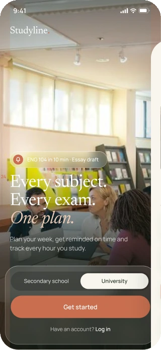
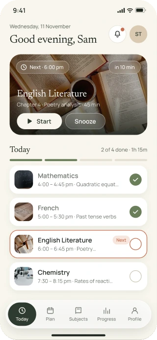
01 · Overview
Studyline is a study companion for secondary school and university students. It turns subjects, exam dates and free hours into a weekly plan, reminds students before each session, runs a focus timer and shows progress. I designed it end to end: structure, flows, UI, a design system, a full prototype with every state, and developer handoff.
02 · Problem
Students juggle many subjects, a timetable and exam dates, usually in their heads or on paper. General to-do apps don’t know about subjects, free hours or exams, so a plan falls apart the first time a session is missed. Most study apps also focus on one level, either school or university.
This is a concept project. The points above are my starting assumptions, to be checked in the usability tests below.
03 · Goals
Build a realistic week from the hours a student actually has.
Make a missed session easy to move, not a reason to give up.
Give every session a clear start, break and end.
Work for secondary school and university without two separate apps.
04 · Audience
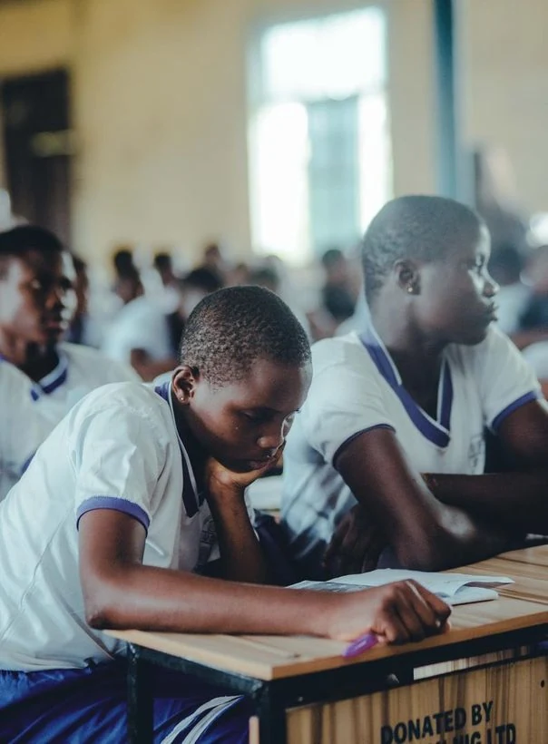
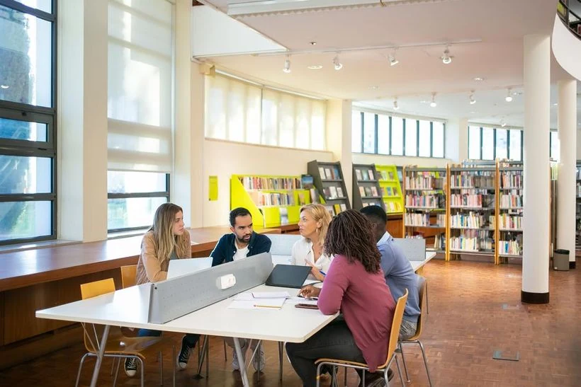
05 · Structure
Today
Plan
Subjects
Progress
Profile
06 · Flows
07 · Decisions
Photos of real classrooms and desks make the app feel like it belongs to students, not to a template.
Frosted glass sits only over photos and floating controls, never behind long text, so it stays readable.
Terracotta is used for the one main action on a screen. Everything else stays forest, sage and cream.
A missed session gets a Reschedule button instead of a red mark that stays.
Subjects and study days are multi-select. Class, year, reminders and colour are single-select, and the prototype behaves that way.
Errors, empty, loading, offline, locked and expired states are all screens, not afterthoughts.
08 · Design system
Newsreader
Headings and numbers
Manrope
Everything you read and tap
09 · Key screens
10 of the full set of 340 screens, chosen to show the weekly plan, a focus session, progress and both student tracks.


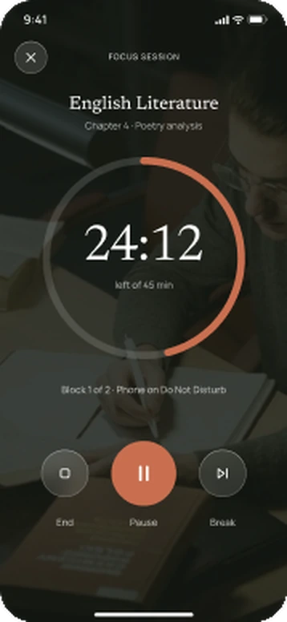
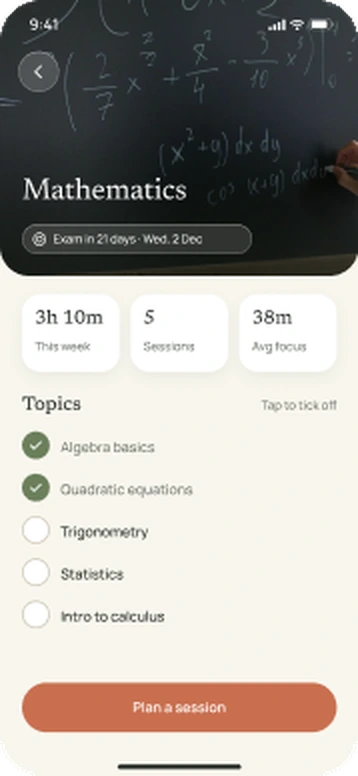
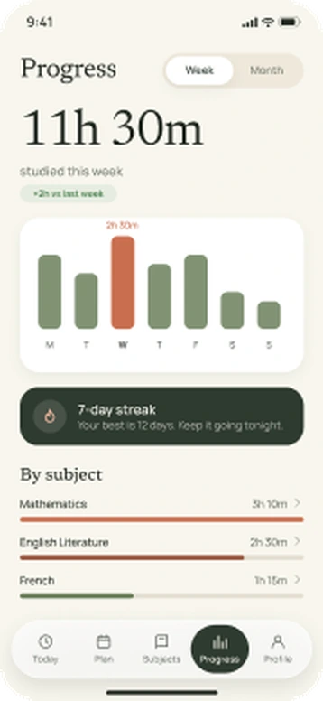
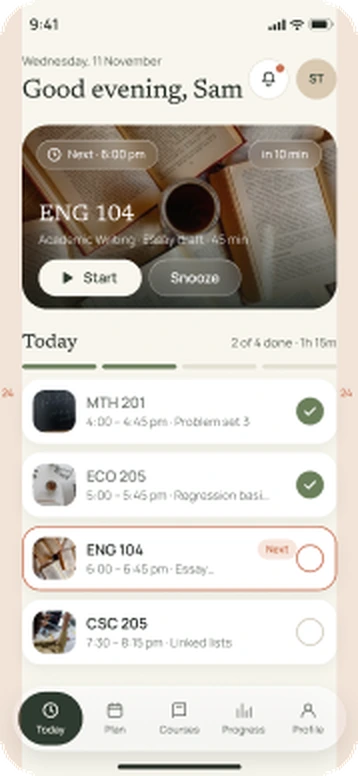
10 · States
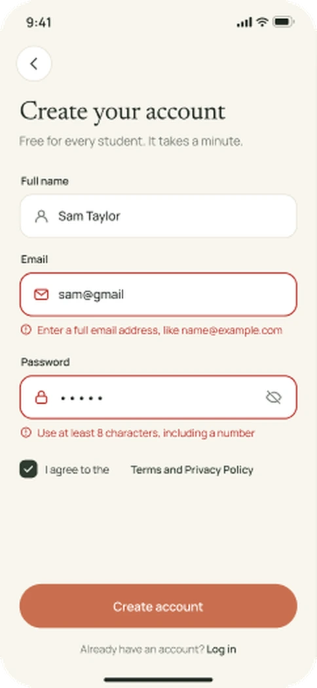
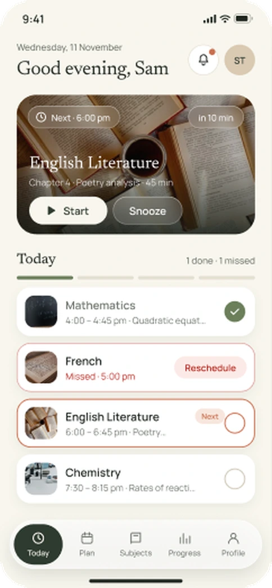
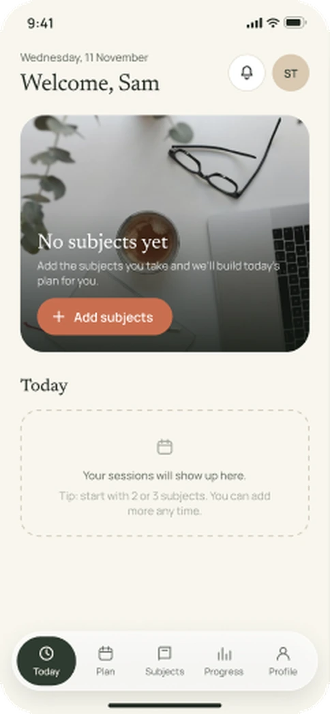
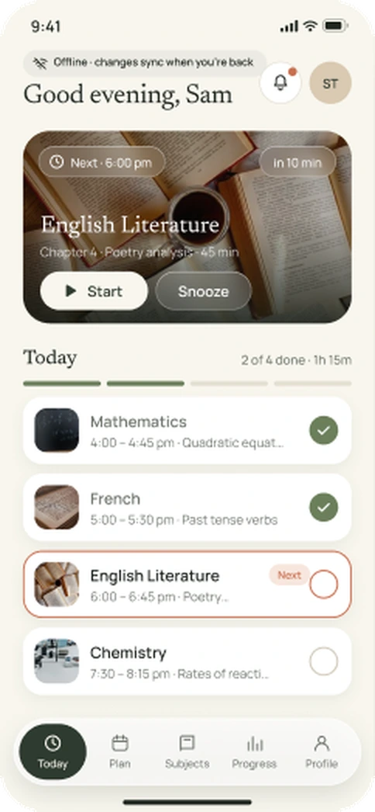
340 screens across both tracks · 0 dead taps in the prototype
11 · Handoff
The Dev Handoff page covers 21 screens with 75 numbered spec cards: element, attributes, data, states, validation, every error message and edge cases. Components use Property=Value variants for Dev Mode, and colours and text are saved as styles.
12 · Testing
Status: planned. Results will be added here after the sessions. No numbers are shown before real tests.
13 · Next
Prototype
All 12 flows are linked in Figma, from first setup to a missed session and the offline state.